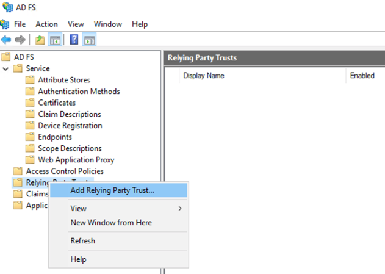
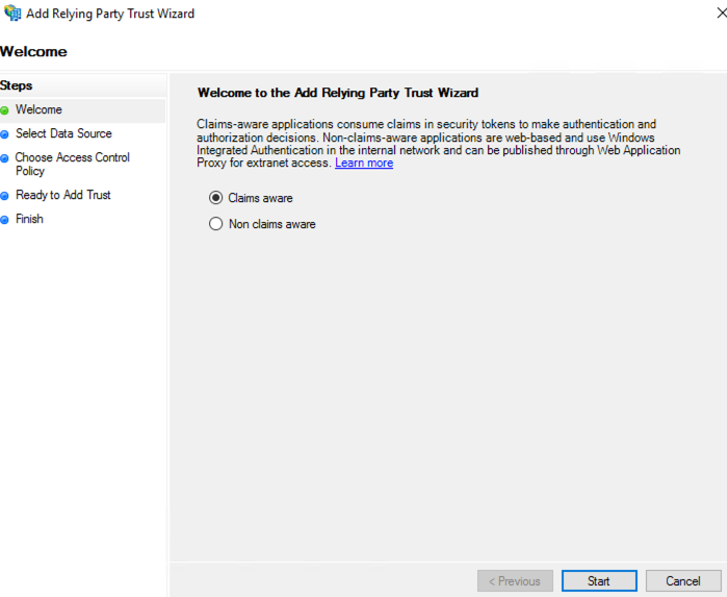
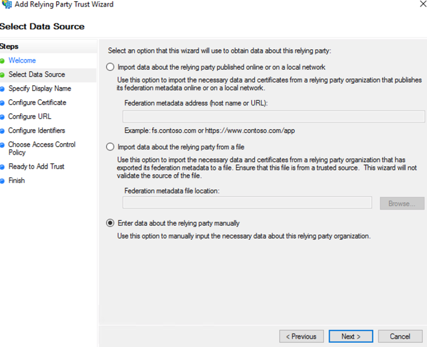
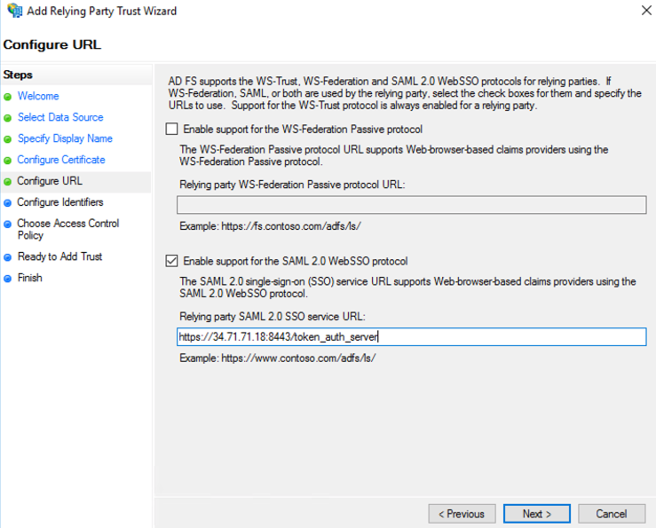
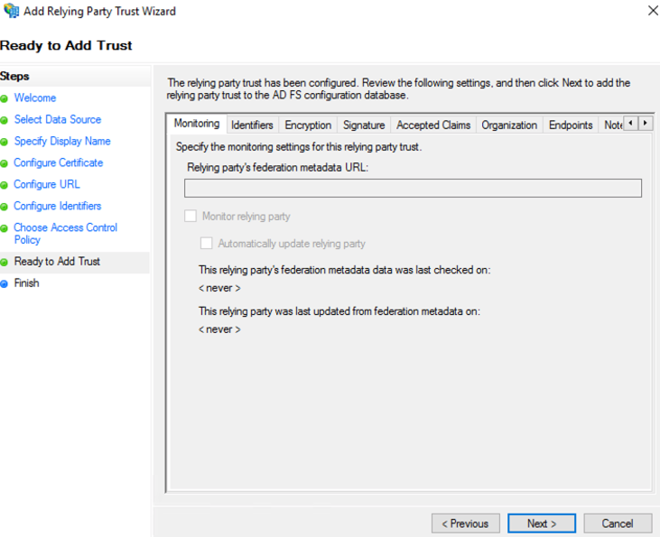
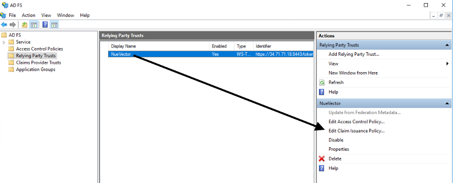
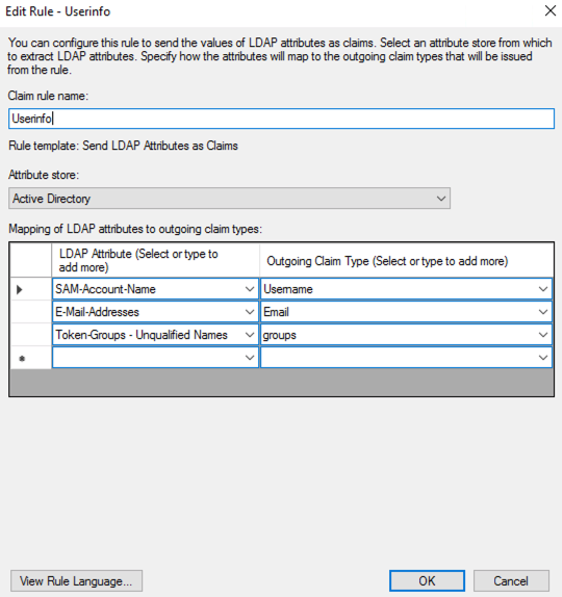
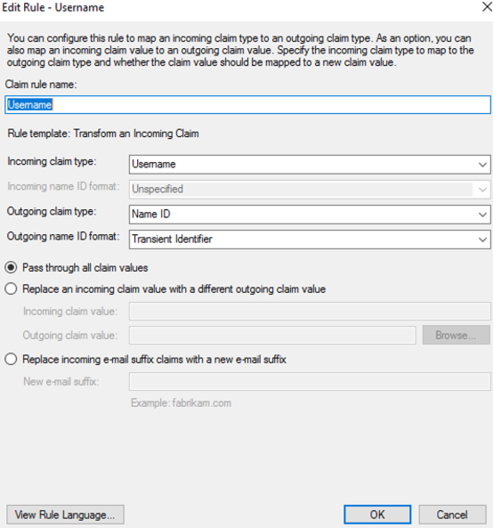

SAML (ADFS)
Configuration d’ADFS et de l’intégration SUSE® Security
Cette section décrit d’abord les étapes de configuration dans ADFS, puis dans la console SUSE® Security.
Configuration d’ADFS
-
Dans la gestion AD FS, faites un clic droit sur “Relying Party Trusts” et sélectionnez “Add Relying Party Trust…”.

-
Sélectionnez le bouton “Start” à partir de l’étape de bienvenue.

-
Sélectionnez “Enter data about the relying party manually” et choisissez “Next”.

-
Entrez un nom unique pour le champ Nom d’affichage et sélectionnez “Next”.

-
Sélectionnez “Next” pour ignorer le chiffrement du token.

-
Cochez “Enable support for the SAML 2.0 WebSSO protocol” et entrez l’URI de redirection SAML depuis SUSE® Security la page Paramètres > Paramètres SAML dans le champ “Relying party SAML 2.0 SSO service URL”. Sélectionnez “Next” pour continuer.

-
Entrez la même URI de redirection SAML dans le champ “Relying party trust identifier” et cliquez sur “Add”; puis sélectionnez “Next” pour continuer.

-
Personnalisez le contrôle d’accès ; puis sélectionnez “Next” pour continuer.

-
Sélectionnez “Next” pour continuer.

-
Sélectionnez “Close” pour terminer.
-
Sélectionnez Modifier la stratégie d’émission de revendications …

-
Sélectionnez “Add Rule…” et choisissez “Send LDAP Attributes as Claims”; puis sélectionnez “Next”. Nommez la règle et choisissez Active Directory comme magasin d’attributs. Seule la revendication de nom d’utilisateur sortant est requise pour l’authentification si le rôle par défaut est défini ; sinon, les groupes sont nécessaires pour le mappage des rôles. L’email est optionnel.
-
SAM-Account-Name → Nom d’utilisateur
-
E-Mail-Address → Email
-
Token-Groups — Noms non qualifiés → groupes

-
-
Sélectionnez “Add Rule…” et choisissez “Transform an Incoming Claim”; puis sélectionnez “Next”. Nommez la règle et définissez le champ tel que capturé dans la capture d’écran ci-dessous. Le format de l’identifiant sortant doit être Identifiant transitoire.

SUSE® Security Configuration
-
URL de connexion unique du fournisseur d’identité
-
Voir les points de terminaison depuis la gestion AD FS > Service et utiliser l’URL du point de terminaison “SAML 2.0/WS-Federation”.
-
Exemple :
https://<adfs-fqdn>/adfs/ls
-
-
Émetteur du fournisseur d’identité
-
Depuis la console de gestion AD FS, faites un clic droit sur AD FS et sélectionnez “Edit Federation Service Properties…” ; utilisez le “Federation Service identifier”.
-
Exemple :
http://<adfs-fqdn>/adfs/services/trust
-
-
Certificat X.509
-
Depuis la gestion AD FS, sélectionnez Service > Certificat, cliquez avec le bouton droit sur le certificat de signature de token et choisissez “View Certificate…”
-
Sélectionnez l’onglet Détails et cliquez sur “Copy to File”
-
Enregistrez-le en tant que fichier x.509 (.CER) encodé en Base-64
-
Copiez et collez le contenu du fichier dans le champ Certificat X.509
-
-
Revendication de groupe
-
Entrez le nom de la revendication sortante pour les groupes
-
Exemple : groupes
-
-
Rôle par défaut
-
Recommandé d’être “None” à moins que vous ne souhaitiez permettre à tout utilisateur authentifié un rôle par défaut.
-
-
Carte des rôles
-
Définissez les noms de groupe des utilisateurs pour le rôle approprié. (Voir l’exemple de capture d’écran ci-dessous.)

-
Mapping des groupes aux rôles et espaces de noms
Veuillez consulter la section Utilisateurs et rôles pour savoir comment mapper les groupes aux rôles prédéfinis et personnalisés ainsi qu’aux espaces de noms dans SUSE® Security.
Dépannage
-
La signature SAML de ADFS doit être soit MessageOnly soit MessageAndAssertion. Utilisez la commande Get-AdfsRelyingPartyTrust pour vérifier ou mettre à jour cela.

-
Synchronisation temporelle entre les nœuds Kubernetes et le serveur ADFS
Pour une authentification réussie, le temps entre les nœuds Kubernetes et le serveur ADFS doit être le même pour éviter des problèmes de synchronisation horaire ou de dérive d’horloge.
Il est recommandé d’utiliser un serveur NTP, avec des paramètres horaires identiques sur tous les serveurs.
Veuillez vérifier et confirmer que les hôtes ADFS et SUSE® Security sont synchronisés et que les éventuels retards ne dépassent pas 10 secondes. Vous pouvez utiliser des commandes Linux et Windows pour vérifier les dates, heures et l’activité du serveur NTP.
|
Vous pouvez recharger les temps d’authentification en désactivant et en réactivant la configuration dans l’interface utilisateur de SUSE® Security comme suit :
Une fois le paramètre réactivé, vous pouvez essayer de vous connecter avec un utilisateur ADFS. Si cela fonctionne, cela confirme que le problème était dû à une erreur de synchronisation horaire entre les nœuds Kubernetes et le serveur ADFS. |
-
Les caractères SAML doivent respecter la casse dans l’interface SUSE® Security
Les noms d’attribut sont sensibles à la casse. Assurez-vous que tout nom d’attribut SAML configuré ici correspond exactement à la configuration de l’application. SAML doit pointer vers l’URL correcte pour s’authentifier.
Tous les champs dans
SUSE® Security UI → Settings → SAML Settingssont sensibles à la casse.Les journaux du contrôleur SUSE® Security contiennent les informations pertinentes sur l’authentification avec le serveur ADFS et les erreurs qui aideront à identifier la cause profonde. Nous recommandons de recréer la condition de connexion échouée et de vérifier les journaux.
-
Assurez-vous d’entrer les groupes, certificats et protocoles corrects
Les paramètres SAML doivent correspondre à la configuration suivante :
Paramètre Valeur URL de connexion unique du fournisseur d’identité
Nécessite le protocole HTTPS
Émetteur du fournisseur d’identité
Nécessite le protocole HTTP
ADFS SamlResponseSignature
Doit être soit MessageOnly soit MessageAndAssertion
|
Ces paramètres doivent être validés sur votre serveur ADFS et dans l’interface SUSE® Security. |
Le certificat sélectionné doit être valide et correctement généré, y compris son CA Root et Intermediate Certificates. Vous pouvez les générer en utilisant votre autorité de certification de confiance, Windows ou un outil d’automatisation tel que LetsEncrypt.
Si l’un de ces paramètres est incorrect, vous recevrez une erreur Authentication Failed lorsque vous essayez de vous connecter à SUSE® Security avec un utilisateur ADFS utilisant l’authentification SAML.